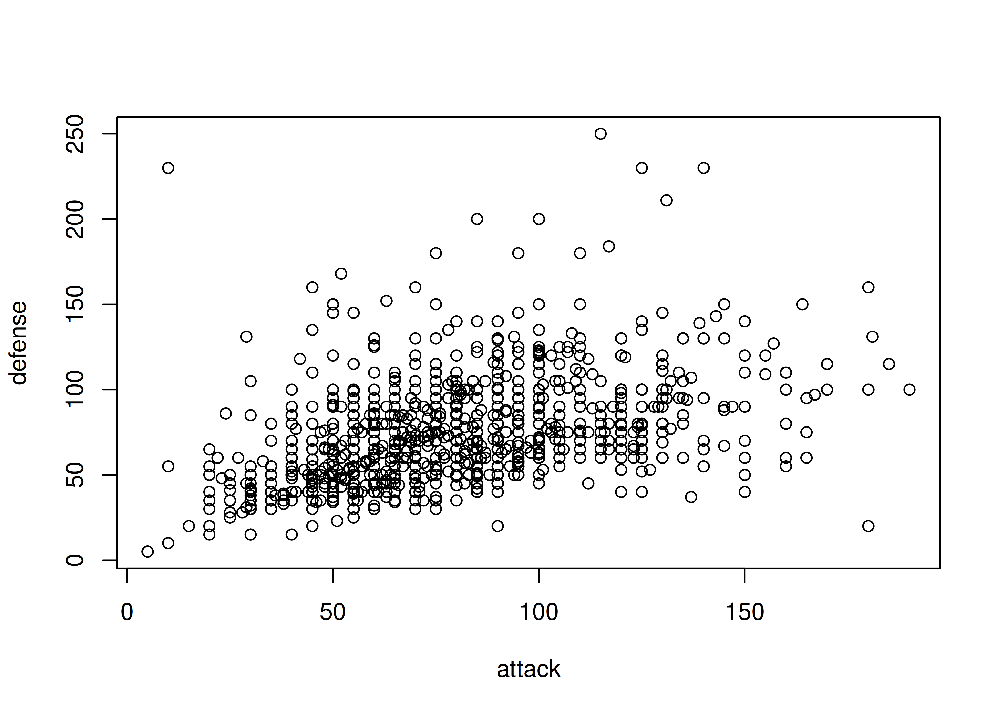

Module 4 External Data
Reading Data: Module Objectives
- Import data from text and excel files into R and SAS for analysis
- Conduct exploratory data analysis to determine
- how the data is structured,
- what cleaning must be done, and
- what (if any) interesting artifacts are in the dataset
4.1 External Data Formats
In order to use statistical software to do anything interesting, we need to be able to get data into the program so that we can work with it effectively. For the moment, we’ll focus on tabular data - data that is stored in a rectangular shape, with rows indicating observations and columns that show variables. This type of data can be stored on the computer in multiple ways:
as raw text, usually in a file that ends with .txt, .tsv, .csv, .dat, or sometimes, there will be no file extension at all. These types of files are human-readable. If part of a text file gets corrupted, the rest of the file may be recoverable.
in a spreadsheet. Spreadsheets, such as those created by MS Excel, Google Sheets, or LibreOffice Calc, are not completely binary formats, but they’re also not raw text files either. They’re a hybrid. Practically, they may function like a poorly laid-out database, a text file, or a total nightmare, depending on who designed the spreadsheet. There is a collection of horror stories here and a series of even more horrifying tweets here

- as a binary file. Binary files are compressed files that are readable by computers but not by humans. They generally take less space to store on disk (but the same amount of space when read into computer memory). If part of a binary file is corrupted, the entire file is usually affected.
- R, SAS, Stata, SPSS, and Minitab all have their own formats for storing binary data. Packages such as
foreignin R will let you read data from other programs, and packages such ashavenin R will let you write data into binary formats used by other programs. To read data from R into SAS, the easiest way is probably to call R from PROC IML. - Here is a very thorough explanation of why binary file formats exist, and why they’re not necessarily optimal.
- R, SAS, Stata, SPSS, and Minitab all have their own formats for storing binary data. Packages such as
- in a database. Databases are typically composed of a set of one or more tables, with information that may be related across tables. Data stored in a database may be easier to access, and may not require that the entire data set be stored in computer memory at the same time, but you may have to join several tables together to get the full set of data you want to work with.
There are, of course, many other non-tabular data formats – some open and easy to work with, some inpenetrable. A few which may be more common:
Web related data structures: XML (eXtensible markup language), JSON (JavaScript Object Notation), YAML. These structures have their own formats and field delimiters, but more importantly, are not necessarily easily converted to tabular structures. They are, however, useful for handling nested objects, such as trees. When read into R or SAS, these file formats are usually treated as lists, and may be restructured afterwards into a format useful for statistical analysis.
Spatial files: Shapefiles are by far the most common version of spatial files14. Spatial files often include structured encodings of geographic information plus corresponding tabular format data that goes with the geographic information. We’ll explore these a bit more when we talk about maps.
To be minimally functional in R and SAS, it’s important to know how to read in text files (CSV, tab-delimited, etc.). It can be helpful to also know how to read in XLSX files. We will briefly cover binary files and databases, but it is less critical to remember how to read these in without consulting one or more online references.
4.2 Text Files
There are several different variants of text data which are relatively common, but for the most part, text data files can be broken down into fixed-width and delimited formats. What’s the difference, you say?
4.2.1 Fixed-width files
In a fixed-width text file, the position of the data indicates which field (variable/column) it belongs to. These files are fairly common outputs from older FORTRAN-based programs, but may be found elsewhere as well - if you have a very large amount of data, a fixed-width format may be more efficient to read, because you can select only the portions of the file which matter for a particular analysis (and so you don’t have to read the whole thing into memory).
Col1 Col2 Col3
3.4 4.2 5.4
27.3 -2.4 15.9
In base R (no extra packages), you can read fwf files in using read.fwf, but you must specify the column breaks yourself.
## url <- "https://www.mesonet.org/index.php/dataMdfMts/dataController/getFile/202006070000/mdf/TEXT/"
data <- read.fwf(url,
skip = 3, # Skip the first 2 lines (useless) + header line
widths = c(5, 6, 6, 7, 7, 7, 7, 6, 7, 7, 7, 8, 9, 6, 7, 7, 7, 7, 7, 7,
7, 8, 8, 8)) # There is a row with the column names specified
Warning in readLines(file, n = thisblock): incomplete final line found on 'data/
mesodata.txt'
data[1:6,] # first 6 rows
V1 V2 V3 V4 V5 V6 V7 V8 V9 V10 V11 V12 V13 V14 V15 V16
1 ACME 110 0 53 31.8 5.2 5.1 146 8.5 0.7 6.9 0 964.79 272 31.8 4.0
2 ADAX 1 0 55 32.4 1.0 0.8 108 36.5 0.4 2.2 0 976.20 245 32.0 0.2
3 ALTU 2 0 31 35.6 8.9 8.7 147 10.9 1.1 11.5 0 960.94 296 34.7 6.8
4 ALV2 116 0 27 35.8 6.7 6.7 145 8.2 1.2 9.0 0 957.45 298 35.5 5.4
5 ANT2 135 0 73 27.8 0.0 0.0 0 0.0 0.0 0.0 0 990.11 213 27.8 0.0
6 APAC 111 0 52 32.3 6.2 6.1 133 9.8 0.8 7.9 0 959.54 277 31.9 4.6
V17 V18 V19 V20 V21 V22 V23 V24
1 29.2 36.2 31.6 25.2 21.7 3.09 2.22 1.48
2 28.8 38.2 29.6 26.8 -998.0 2.61 1.88 -998.00
3 29.3 34.1 30.7 26.1 -998.0 3.39 2.47 -998.00
4 24.7 34.7 25.6 22.6 -998.0 2.70 1.60 -998.00
5 29.5 31.1 30.2 26.8 23.8 1.96 1.73 1.33
6 30.4 35.2 34.7 28.2 22.8 1.79 1.53 1.78You can count all of those spaces by hand (not shown), you can use a different function, or you can write code to do it for you.
# I like to cheat a bit....
# Read the first few lines in
tmp <- readLines(url, n = 20)[-c(1:2)]
# split each line into a series of single characters
tmp_chars <- strsplit(tmp, '')
# Bind the lines together into a character matrix
# do.call applies a function to an entire list - so instead of doing 18 rbinds,
# one command will put all 18 rows together
tmp_chars <- do.call("rbind", tmp_chars) # (it's ok if you don't get this line)
# Make into a logical matrix where T = space, F = not space
tmp_chars_space <- tmp_chars == " "
# Add up the number of rows where there is a non-space character
# space columns would have 0s/FALSE
tmp_space <- colSums(!tmp_chars_space)
# We need a nonzero column followed by a zero column
breaks <- which(tmp_space != 0 & c(tmp_space[-1], 0) == 0)
# Then, we need to get the widths between the columns
widths <- diff(c(0, breaks))
# Now we're ready to go
mesodata <- read.fwf(url, skip = 3, widths = widths, header = F)
Warning in readLines(file, n = thisblock): incomplete final line found on 'data/
mesodata.txt'
# read header separately - if you use header = T, it errors for some reason.
# It's easier just to work around the error than to fix it :)
mesodata_names <- read.fwf(url, skip = 2, n = 1, widths = widths, header = F,
stringsAsFactors = F)
names(mesodata) <- as.character(mesodata_names)
mesodata[1:6,] # first 6 rows
STID STNM TIME RELH TAIR WSPD WVEC WDIR WDSD WSSD
1 ACME 110 0 53 31.8 5.2 5.1 146 8.5 0.7
2 ADAX 1 0 55 32.4 1.0 0.8 108 36.5 0.4
3 ALTU 2 0 31 35.6 8.9 8.7 147 10.9 1.1
4 ALV2 116 0 27 35.8 6.7 6.7 145 8.2 1.2
5 ANT2 135 0 73 27.8 0.0 0.0 0 0.0 0.0
6 APAC 111 0 52 32.3 6.2 6.1 133 9.8 0.8
WMAX RAIN PRES SRAD TA9M WS2M TS10 TB10 TS05
1 6.9 0 964.79 272 31.8 4.0 29.2 36.2 31.6
2 2.2 0 976.20 245 32.0 0.2 28.8 38.2 29.6
3 11.5 0 960.94 296 34.7 6.8 29.3 34.1 30.7
4 9.0 0 957.45 298 35.5 5.4 24.7 34.7 25.6
5 0.0 0 990.11 213 27.8 0.0 29.5 31.1 30.2
6 7.9 0 959.54 277 31.9 4.6 30.4 35.2 34.7
TS25 TS60 TR05 TR25 TR60
1 25.2 21.7 3.09 2.22 1.48
2 26.8 -998.0 2.61 1.88 -998.00
3 26.1 -998.0 3.39 2.47 -998.00
4 22.6 -998.0 2.70 1.60 -998.00
5 26.8 23.8 1.96 1.73 1.33
6 28.2 22.8 1.79 1.53 1.78But, there’s an even simpler way…
The readr package creates data-frame like objects called tibbles (really, they’re a souped-up data frame), but it is much friendlier to use. Tibbles also do not have the problems with factors (see the introduction to factors) - they will always read characters in as characters.
library(readr) # Better data importing in R
read_table(url, skip = 2) # Gosh, that was much easier!
# A tibble: 121 x 24
STID STNM TIME RELH TAIR WSPD WVEC WDIR WDSD WSSD WMAX RAIN PRES
<chr> <dbl> <dbl> <dbl> <dbl> <dbl> <dbl> <dbl> <dbl> <dbl> <dbl> <dbl> <dbl>
1 ACME 110 0 53 31.8 5.2 5.1 146 8.5 0.7 6.9 0 965.
2 ADAX 1 0 55 32.4 1 0.8 108 36.5 0.4 2.2 0 976.
3 ALTU 2 0 31 35.6 8.9 8.7 147 10.9 1.1 11.5 0 961.
4 ALV2 116 0 27 35.8 6.7 6.7 145 8.2 1.2 9 0 957.
5 ANT2 135 0 73 27.8 0 0 0 0 0 0 0 990.
6 APAC 111 0 52 32.3 6.2 6.1 133 9.8 0.8 7.9 0 960.
7 ARD2 126 0 46 32.9 2.6 2.5 150 11.8 0.5 3.6 0 979.
8 ARNE 6 0 28 33.5 6.5 6.3 163 11.9 1.5 10 0 927.
9 BEAV 8 0 23 34.9 11.2 11.1 165 7.3 1.4 15.2 0 921.
10 BESS 9 0 37 33.8 8.3 8.3 156 6.6 1.3 11.2 0 951.
# … with 111 more rows, and 11 more variables: SRAD <dbl>, TA9M <dbl>,
# WS2M <dbl>, TS10 <dbl>, TB10 <dbl>, TS05 <dbl>, TS25 <dbl>, TS60 <dbl>,
# TR05 <dbl>, TR25 <dbl>, TR60 <dbl>You can also write fixed-width files if you really want to:
if (!"gdata" %in% installed.packages()) install.packages("gdata")
library(gdata)
write.fwf(mtcars, file = "data/04_mtcars-fixed-width.txt")In SAS, it’s a bit more complicated, but not that much - the biggest difference is that you generally have to specify the column names for SAS. For complicated data, as in R, you may also have to specify the column widths.
6 /* This downloads the file to my machine */
7 /* x "curl
7 ! https://www.mesonet.org/index.php/dataMdfMts/dataController/getF
7 ! ile/202006070000/mdf/TEXT/
8 > data/mesodata.txt" */
9 /* only run this once */
10
11 /* Specifying WORK.mesodata means the dataset will cease to
11 ! exist after this chunk exits */
12 data WORK.mesodata;
13
14 infile "data/mesodata.txt" firstobs = 4;
15 /* Skip the first 3 rows */
16 length STID $ 4; /* define ID length */
17 input STID $ STNM TIME RELH TAIR
18 WSPD WVEC WDIR WDSD WSSD WMAX
19 RAIN PRES SRAD TA9M WS2M TS10
20 TB10 TS05 TS25 TS60 TR05 TR25 TR60;
21 run;
NOTE: The data set WORK.MESODATA has 0 observations and 24 variables.
NOTE: DATA statement used (Total process time):
real time 0.00 seconds
cpu time 0.00 seconds
22
23 proc print data=mesodata (obs=10); /* print the first 10
23 ! observations */
24 run;
NOTE: PROCEDURE PRINT used (Total process time):
real time 0.00 seconds
cpu time 0.01 seconds
ERROR: Errors printed on pages 4,5,7,11.In SAS data statements, you generally need to specify the data names explicitly.
In theory you can also get SAS to write out a fixed-width file, but it’s much easier to just… not. You can generally use a CSV or format of your choice – and you should definitely do that, because delimited files are much easier to work with.
4.2.2 Delimited Text Files
Delimited text files are files where fields are separated by a specific character, such as " “,”", tab, etc. Often, delimited text files will have the column names as the first row in the file.
As long as you know the delimiter, it’s pretty easy to read in data from these files in R using the readr package.
url <- "https://raw.githubusercontent.com/shahinrostami/pokemon_dataset/master/pokemon_gen_1_to_8.csv"
pokemon_info <- read_csv(url)
Warning: Missing column names filled in: 'X1' [1]
── Column specification ────────────────────────────────────────────────────────
cols(
.default = col_double(),
name = col_character(),
german_name = col_character(),
japanese_name = col_character(),
status = col_character(),
species = col_character(),
type_1 = col_character(),
type_2 = col_character(),
ability_1 = col_character(),
ability_2 = col_character(),
ability_hidden = col_character(),
growth_rate = col_character(),
egg_type_1 = col_character(),
egg_type_2 = col_character()
)
ℹ Use `spec()` for the full column specifications.
pokemon_info[1:6, 1:6] # Show only the first 6 lines & cols
# A tibble: 6 x 6
X1 pokedex_number name german_name japanese_name generation
<dbl> <dbl> <chr> <chr> <chr> <dbl>
1 0 1 Bulbasaur Bisasam フシギダネ (Fushigid… 1
2 1 2 Ivysaur Bisaknosp フシギソウ (Fushigis… 1
3 2 3 Venusaur Bisaflor フシギバナ (Fushigib… 1
4 3 3 Mega Venusa… Bisaflor フシギバナ (Fushigib… 1
5 4 4 Charmander Glumanda ヒトカゲ (Hitokage) 1
6 5 5 Charmeleon Glutexo リザード (Lizardo) 1
# a file delimited with |
url <- "https://raw.githubusercontent.com/srvanderplas/unl-stat850/master/data/NE_Features_20200501.txt"
nebraska_locations <- read_delim(url, delim = "|")
── Column specification ────────────────────────────────────────────────────────
cols(
.default = col_character(),
FEATURE_ID = col_double(),
PRIM_LAT_DEC = col_double(),
PRIM_LONG_DEC = col_double(),
SOURCE_LAT_DEC = col_double(),
SOURCE_LONG_DEC = col_double(),
ELEV_IN_M = col_double(),
ELEV_IN_FT = col_double()
)
ℹ Use `spec()` for the full column specifications.
nebraska_locations[1:6, 1:6]
# A tibble: 6 x 6
FEATURE_ID FEATURE_NAME FEATURE_CLASS STATE_ALPHA STATE_NUMERIC COUNTY_NAME
<dbl> <chr> <chr> <chr> <chr> <chr>
1 171013 Peetz Table Area CO 08 Logan
2 171029 Sidney Draw Valley NE 31 Cheyenne
3 182687 Highline Canal Canal CO 08 Sedgwick
4 182688 Cottonwood Cre… Stream CO 08 Sedgwick
5 182689 Sand Draw Valley CO 08 Sedgwick
6 182690 Sedgwick Draw Valley CO 08 Sedgwick You can also read in the same files using read.csv and read.delim, which are the equivalent base R functions.
url <- "https://raw.githubusercontent.com/shahinrostami/pokemon_dataset/master/pokemon_gen_1_to_8.csv"
pokemon_info <- read.csv(url, header = T, stringsAsFactors = F)
pokemon_info[1:6, 1:6] # Show only the first 6 lines & cols
X pokedex_number name german_name japanese_name
1 0 1 Bulbasaur Bisasam フシギダネ (Fushigidane)
2 1 2 Ivysaur Bisaknosp フシギソウ (Fushigisou)
3 2 3 Venusaur Bisaflor フシギバナ (Fushigibana)
4 3 3 Mega Venusaur Bisaflor フシギバナ (Fushigibana)
5 4 4 Charmander Glumanda ヒトカゲ (Hitokage)
6 5 5 Charmeleon Glutexo リザード (Lizardo)
generation
1 1
2 1
3 1
4 1
5 1
6 1
# a file delimited with |
url <- "https://raw.githubusercontent.com/srvanderplas/unl-stat850/master/data/NE_Features_20200501.txt"
nebraska_locations <- read.delim(url, sep = "|", header = T)
nebraska_locations[1:6, 1:6]
FEATURE_ID FEATURE_NAME FEATURE_CLASS STATE_ALPHA STATE_NUMERIC
1 171013 Peetz Table Area CO 8
2 171029 Sidney Draw Valley NE 31
3 182687 Highline Canal Canal CO 8
4 182688 Cottonwood Creek Stream CO 8
5 182689 Sand Draw Valley CO 8
6 182690 Sedgwick Draw Valley CO 8
COUNTY_NAME
1 Logan
2 Cheyenne
3 Sedgwick
4 Sedgwick
5 Sedgwick
6 SedgwickSAS also has procs to accommodate CSV and other delimited files. PROC IMPORT may be the simplest way to do this, but of course a DATA step will work as well. We do have to tell SAS to treat the data file as a UTF-8 file (because of the japanese characters). Don’t know what UTF-8 is? Watch this excellent YouTube video explaining the history of file encoding!
While writing this code, I got an error of “Invalid logical name” because originally the filename was pokemonloc. Let this be a friendly reminder that your dataset names in SAS are limited to 8 characters in SAS.
CSV Import in SAS
6 /* x "curl
6 ! https://raw.githubusercontent.com/shahinrostami/pokemon_dataset/
6 ! master/pokemon_gen_1_to_8.csv > data/pokemon.csv";
7 only run this once to download the file... */
8 filename pokeloc 'data/pokemon.csv' encoding="utf-8";
9
10
NOTE: PROCEDURE IMPORT used (Total process time):
real time 0.00 seconds
cpu time 0.00 seconds
NOTE: The SAS System stopped processing this step because of errors.
11 proc import datafile = pokeloc out=poke
12 DBMS = csv; /* comma delimited file */
13 GETNAMES = YES
14 ;
15 proc print data=poke (obs=10); /* print the first 10
15 ! observations */
ERROR: File WORK.POKE.DATA does not exist.
16 run;
NOTE: The SAS System stopped processing this step because of errors.
NOTE: PROCEDURE PRINT used (Total process time):
real time 0.00 seconds
cpu time 0.00 seconds
ERROR: Errors printed on pages 4,5,7,11,12.The only abnormal thing is that on my computer, the japanese characters don’t render. Here is the output from SAS running the above code interactively
Alternately (because UTF-8 is finicky depending on your OS and the OS the data file was created under), you can convert the UTF-8 file to ASCII or some other safer encoding before trying to read it in.
CSVs in SAS (via R)
If I fix the file in R (because I know how to fix it there… another option is to fix it manually),
library(readr)
library(dplyr)
tmp <- read_csv("data/pokemon.csv")[,-1]
Warning: Missing column names filled in: 'X1' [1]
── Column specification ────────────────────────────────────────────────────────
cols(
.default = col_double(),
name = col_character(),
german_name = col_character(),
japanese_name = col_character(),
status = col_character(),
species = col_character(),
type_1 = col_character(),
type_2 = col_character(),
ability_1 = col_character(),
ability_2 = col_character(),
ability_hidden = col_character(),
growth_rate = col_character(),
egg_type_1 = col_character(),
egg_type_2 = col_character()
)
ℹ Use `spec()` for the full column specifications.
# You'll learn how to do this later
tmp <- select(tmp, -japanese_name) %>%
mutate_all(iconv, from="UTF-8", to = "ASCII//TRANSLIT")
write_csv(tmp, "data/pokemon_ascii.csv", na='.')Then, reading in the new file allows us to actually see the output.
6 libname classdat "sas/";
NOTE: Libref CLASSDAT was successfully assigned as follows:
Engine: V9
Physical Name:
/home/susan/Projects/Class/unl-stat850/stat850-textbook/sas
7 /* Create a library of class data */
8
9 filename pokeloc "data/pokemon_ascii.csv";
10
NOTE: PROCEDURE IMPORT used (Total process time):
real time 0.00 seconds
cpu time 0.00 seconds
NOTE: The SAS System stopped processing this step because of errors.
11 proc import datafile = pokeloc out=classdat.poke
12 DBMS = csv /* comma delimited file */
13 replace;
14 GETNAMES = YES;
15 GUESSINGROWS = 1028 /* use all data for guessing the variable
15 ! type */
16 ;
17 proc print data=classdat.poke (obs=10); /* print the first 10
17 ! observations */
18 run;
NOTE: PROCEDURE PRINT used (Total process time):
real time 0.00 seconds
cpu time 0.00 seconds
ERROR: Errors printed on pages 4,5,7,11,12.Non-comma delimited files in SAS (via R)
To read in a pipe delimited file (the ‘|’ character), we have to make some changes. Here is the proc import code. Note that I am reading in a version of the file that I’ve converted to ASCII (see details below) because while the import works with the original file, it causes the SAS -> R pipeline that the book is built on to break.
tmp <- readLines("data/NE_Features_20200501.txt")
tmp_ascii <- iconv(tmp, to = "ASCII//TRANSLIT")
writeLines(tmp_ascii, "data/NE_Features_ascii.txt")6 /* Without specifying the library to store the data in, it is
6 ! stored in WORK */
NOTE: PROCEDURE IMPORT used (Total process time):
real time 0.00 seconds
cpu time 0.00 seconds
NOTE: The SAS System stopped processing this step because of errors.
7 proc import datafile = "data/NE_Features_ascii.txt"
7 ! out=nefeatures
8 DBMS = DLM /* delimited file */
9 replace;
10 GETNAMES = YES;
11 DELIMITER = '|';
12 GUESSINGROWS = 31582;
13 run;
14
15 proc print data=nefeatures (obs=10); /* print the first 10
15 ! observations */
ERROR: File WORK.NEFEATURES.DATA does not exist.
16 run;
NOTE: The SAS System stopped processing this step because of errors.
NOTE: PROCEDURE PRINT used (Total process time):
real time 0.00 seconds
cpu time 0.00 seconds
17
ERROR: Errors printed on pages 4,5,7,11,12.Under the hood, proc import is just writing code for a data step. So when proc import doesn’t work, we can just write the code ourselves. It requires a bit more work (specifying column names, for example) but it also doesn’t fail nearly as often.
6 /* x "curl
6 ! https://raw.githubusercontent.com/srvanderplas/unl-stat850/maste
6 ! r/data/NE_Features_20200501.txt
7 > data/NE_Features_20200501.txt"; */
8 /* only run this once... */
9
10 data nefeatures;
11 /*infile "data/NE_Features_20200501.txt"*/
12 infile "data/NE_Features_ascii.txt"
13 dlm='|' /* specify delimiter */
14 encoding="utf-8" /* specify encoding */
15 DSD /* delimiter sensitive data */
16 missover /* keep going if missing obs encountered */
17 firstobs=2; /* skip header row */
18 input FEATURE_ID $
19 FEATURE_NAME $
20 FEATURE_CLASS $
21 STATE_ALPHA $
22 STATE_NUMERIC
23 COUNTY_NAME $
24 COUNTY_NUMERIC $
25 PRIMARY_LAT_DMS $
26 PRIM_LONG_DMS $
27 PRIM_LAT_DEC
28 PRIM_LONG_DEC
29 SOURCE_LAT_DMS $
30 SOURCE_LONG_DMS $
31 SOURCE_LAT_DEC
32 SOURCE_LONG_DEC
33 ELEV_IN_M
34 ELEV_IN_FT
35 MAP_NAME $
36 DATE_CREATED $
37 DATE_EDITED $
38 ;
39 run;
NOTE: The data set WORK.NEFEATURES has 0 observations and 20 variables.
NOTE: DATA statement used (Total process time):
real time 0.00 seconds
cpu time 0.00 seconds
40
41 proc print data=nefeatures (obs=10); /* print the first 10
41 ! observations */
42 run;
NOTE: PROCEDURE PRINT used (Total process time):
real time 0.00 seconds
cpu time 0.00 seconds
ERROR: Errors printed on pages 4,5,7,11,12,13.Try it out
Rebrickable.com contains tables of almost any information imaginable concerning Lego sets, conveninently available at their download page. Because these datasets are comparatively large, they are available as compressed CSV files - that is, the .gz extension is a gzip compression applied to the CSV.
The readr package can handle .csv.gz files with no problems. Try reading in the data using the appropriate function from that package. Can you save the data as an uncompressed csv?
Solution
library(readr)
legosets <- read_csv("https://cdn.rebrickable.com/media/downloads/sets.csv.gz")
write_csv(legosets, "data/lego_sets.csv")In SAS, it is also possible to read gzip files directly; however, it is tricky to get PROC IMPORT to work with gzip files. The code below will 1) download the file (uncomment that part), 2) create a link to the gzip file, 3) create a link to where the unzipped file will go, and 4) unzip the file to the link specified in (3).
Can you write two different statements (one using proc import on the unzipped file, one using a datastep on the zipped file) to read the data in? Note that you may have to specify the length of character fields in the data step version using length var_name $ 100; before the input statement to set variable var_name to have maximum length of 100 characters.
/* x "curl https://cdn.rebrickable.com/media/downloads/sets.csv.gz > \
data/lego_sets.csv.gz";
only run this once... */
filename legofile ZIP "data/lego_sets.csv.gz" GZIP;
filename target "data/lego_sets.csv";
data _null_;
infile legofile;
file target;
input;
put _infile_;
run;Solution
6 libname classdat "sas/";
NOTE: Libref CLASSDAT was successfully assigned as follows:
Engine: V9
Physical Name:
/home/susan/Projects/Class/unl-stat850/stat850-textbook/sas
7 /* Work with the library of class data */
8
9 filename legofile ZIP "data/lego_sets.csv.gz" GZIP;
10 filename target "data/lego_sets.csv";
11
12 data _null_;
13 infile legofile;
14 file target;
15 input;
16 put _infile_;
17 run;
NOTE: DATA statement used (Total process time):
real time 0.00 seconds
cpu time 0.00 seconds
18
NOTE: PROCEDURE IMPORT used (Total process time):
real time 0.00 seconds
cpu time 0.00 seconds
NOTE: The SAS System stopped processing this step because of errors.
19 proc import datafile = target out=classdat.legoset DBMS=csv
19 ! replace;
20 GETNAMES=YES;
21 GUESSINGROWS=15424;
22 run;
23
24 /* This dataset will be stored in WORK */
25 data legoset2;
26 infile legofile dsd firstobs=2
27 dlm=",";
28 length set_num $20;
29 length name $100;
30 input set_num $ name $ year theme_id num_parts;
31 run;
NOTE: The data set WORK.LEGOSET2 has 0 observations and 5 variables.
NOTE: DATA statement used (Total process time):
real time 0.00 seconds
cpu time 0.00 seconds
32
33 proc print data=classdat.legoset (obs=10);
34 run;
NOTE: PROCEDURE PRINT used (Total process time):
real time 0.00 seconds
cpu time 0.00 seconds
35
36 proc print data=legoset2 (obs=10);
37 run;
NOTE: PROCEDURE PRINT used (Total process time):
real time 0.00 seconds
cpu time 0.00 seconds
ERROR: Errors printed on pages 4,5,7,11,12,13.4.3 Spreadsheets
In R, the easiest way to read Excel data in is to use the readxl package. There are many other packages with different features, however - I have used openxlsx in the past to format spreadsheets to send to clients, for instance. By far and away you are more likely to have problems with the arcane format of the Excel spreadsheet than with the package used to read the data in. It is usually helpful to open the spreadsheet up in Excel or LibreOffice first to make sure the formatting is as you expected it to be.
if (!"readxl" %in% installed.packages()) install.packages("readxl")
library(readxl)
path <- "data/police_violence.xlsx"
if (!file.exists(path)) download.file("https://mappingpoliceviolence.org/s/MPVDatasetDownload.xlsx", path, mode = "wb")
police_violence <- read_xlsx("data/police_violence.xlsx", sheet = 1)
police_violence[1:10, 1:6]
# A tibble: 10 x 6
`Victim's name` `Victim's age` `Victim's gender` `Victim's race`
<chr> <dbl> <chr> <chr>
1 Eric M. Tellez 28 Male White
2 Name withheld by police NA Male Unknown race
3 Terry Hudson 57 Male Black
4 Malik Williams 23 Male Black
5 Frederick Perkins 37 Male Black
6 Michael Vincent Davis 49 Male White
7 Brian Elkins 47 Male Unknown race
8 Debra D. Arbuckle 51 Female White
9 Name withheld by police NA Male Unknown race
10 Cody McCaulou 27 Male White
# … with 2 more variables: URL of image of victim <chr>,
# Date of Incident (month/day/year) <dttm>In SAS, PROC IMPORT is one easy way to read in xlsx files. In this code chunk, we have to handle the fact that one of the columns in the spreadsheet contains dates. SAS and Excel handle dates a bit differently, so we have to transform the date variable – and we may as well relabel it at the same time. To do this, we use a DATA statement that outputs to the same dataset it references. We define a new variable date, adjust the Excel dates so that they conform to SAS’s standard, and tell SAS how to format the date. (We’ll talk more about dates and times later)
6 libname classdat "sas/";
NOTE: Libref CLASSDAT was successfully assigned as follows:
Engine: V9
Physical Name:
/home/susan/Projects/Class/unl-stat850/stat850-textbook/sas
7
NOTE: PROCEDURE IMPORT used (Total process time):
real time 0.00 seconds
cpu time 0.00 seconds
NOTE: The SAS System stopped processing this step because of errors.
8 PROC IMPORT OUT=classdat.police
9 DATAFILE="data/police_violence.xlsx"
10 DBMS=xlsx /* Tell SAS what type of file it's reading */
11 REPLACE; /* replace the dataset if it already exists */
12 SHEET="2013-2019 Police Killings"; /* SAS reads the first
12 ! sheet by default */
13 GETNAMES=yes;
14 informat VAR6 mmddyy10.; /* tell SAS what format the date is
14 ! in */
15 RUN;
16
17 DATA classdat.police;
18 SET classdat.police; /* modify the dataset and write back out
18 ! to it */
19
20 date = VAR6 - 21916; /* Conversion to SAS date standard from
20 ! Excel */
21 FORMAT date MMDDYY10.; /* Tell SAS how to format the data when
21 ! printing it */
22 DROP VAR6; /* Get rid of the original data */
23
24 num_age = INPUT(Victim_s_age, 3.); /* create numeric age
24 ! variable */
25
26 DROP
27 A_brief_description_of_the_circu
28 URL_of_image_of_victim
29 Link_to_news_article_or_photo_of;
30 /* drop longer variable to save space so the file fits on
30 ! GitHub */
31 /* Size went from 100 MB to 6.7 MB without these 3 vars */
32 RUN;
WARNING: The variable A_brief_description_of_the_circu in the DROP, KEEP,
or RENAME list has never been referenced.
WARNING: The variable URL_of_image_of_victim in the DROP, KEEP, or RENAME
list has never been referenced.
WARNING: The variable Link_to_news_article_or_photo_of in the DROP, KEEP,
or RENAME list has never been referenced.
NOTE: The data set CLASSDAT.POLICE has 0 observations and 25 variables.
WARNING: Data set CLASSDAT.POLICE was not replaced because this step was
stopped.
NOTE: DATA statement used (Total process time):
real time 0.00 seconds
cpu time 0.00 seconds
33
34
35 PROC PRINT DATA=classdat.police (obs=10); /* print the first 10
35 ! observations */
36 VAR Victim_s_name Victim_s_age num_age Victim_s_gender
36 ! Victim_s_race date;
37 RUN;
NOTE: PROCEDURE PRINT used (Total process time):
real time 0.00 seconds
cpu time 0.00 seconds
ERROR: Errors printed on pages 4,5,7,11,12,13,16,17,18,19,24,25,27,28,29,
30,33,34,35,36,37,38,40.Here is some additional information about reading and writing Excel files in SAS. In general, it is better to avoid working in Excel, as it is not easy to reproduce the results (and Excel is horrible about dates and times, among other issues). Saving your data in more reproducible formats will make writing reproducible code much easier.
Try it out
The Nebraska Department of Motor Vehicles publishes a database of vehicle registrations by type of license plate. Link
Read that data in using both R and SAS. Be sure to look at the structure of the excel file, so that you can read the data in properly!
Solution
url <- "https://dmv.nebraska.gov/sites/dmv.nebraska.gov/files/doc/2019_Veh_Reg_by_Plate_Type.xlsx"
download.file(url, destfile = "data/2019_Vehicle_Registration_Plates_NE.xlsx", mode = "wb")
library(readxl)
ne_plates <- read_xlsx(path = "data/2019_Vehicle_Registration_Plates_NE.xlsx", skip = 1)
New names:
* County -> County...1
* County -> County...34
ne_plates[1:10,1:6]
Warning in fansi::strwrap_ctl(x, width = max(width, 0), indent = indent, :
Encountered a C0 control character, see `?unhandled_ctl`; you can use
`warn=FALSE` to turn off these warnings.
# A tibble: 10 x 6
County...1 `Amateur\r\nRadio` `Apport-\r\nioned` `Apport\r\nTrlr` AC
<chr> <dbl> <dbl> <dbl> <dbl>
1 C01 - DOUGLAS 148 0 0 10
2 C02 - LANCASTER 244 0 0 2
3 C03 - GAGE 10 0 0 1
4 C04 - CUSTER 6 0 0 0
5 C05 - DODGE 28 0 0 0
6 C06 - SAUNDERS 18 0 0 0
7 C07 - MADISON 19 0 0 0
8 C08 - HALL 16 0 0 0
9 C09 - BUFFALO 26 0 0 2
10 C10 - PLATTE 12 0 0 2
# … with 1 more variable: Breast
Cancer <dbl>NOTE: PROCEDURE IMPORT used (Total process time):
real time 0.00 seconds
cpu time 0.00 seconds
NOTE: The SAS System stopped processing this step because of errors.
6 PROC IMPORT OUT=WORK.licplate
7 DATAFILE="data/2019_Vehicle_Registration_Plates_NE.xlsx"
8 DBMS=xlsx /* Tell SAS what type of file it's reading */
9 REPLACE; /* replace the dataset if it already exists */
10 RANGE="'Reg By Plate Type'$A2:0"
11 GETNAMES=yes;
12 RUN;
13
14 /* just a few columns... way too many to handle */
15 PROC PRINT DATA=WORK.licplate (obs=10); /* print the first 10
15 ! observations */
ERROR: File WORK.LICPLATE.DATA does not exist.
16 Var County Amateur__Radio Breast__Cancer Choose__Life
16 ! County__Gov Comm__Truck Passenger Total;
ERROR: No data set open to look up variables.
ERROR: No data set open to look up variables.
ERROR: No data set open to look up variables.
ERROR: No data set open to look up variables.
ERROR: No data set open to look up variables.
ERROR: No data set open to look up variables.
ERROR: No data set open to look up variables.
ERROR: No data set open to look up variables.
17 RUN;
NOTE: The SAS System stopped processing this step because of errors.
NOTE: PROCEDURE PRINT used (Total process time):
real time 0.00 seconds
cpu time 0.00 seconds
ERROR: Errors printed on pages 4,5,7,11,12,13,16,17,18,19,24,25,27,28,29,
30,33,34,35,36,37,38,41.4.4 Binary Files
Both R and SAS have binary data files that store data in a more compact form. It is relatively common for government websites, in particular, to provide SAS data in binary form.
Luckily, it is possible to read the binary data files in both programs.
Let’s read in the data from the 2009 National Household Travel Survey:
6 libname classdat "data";
NOTE: Libref CLASSDAT was successfully assigned as follows:
Engine: V9
Physical Name:
/home/susan/Projects/Class/unl-stat850/stat850-textbook/data
7 /* this tells SAS where to look for (a bunch of) data files */
8
9 proc contents data=classdat.cen10pub; /* This tells sas to
9 ! access the specific file */
NOTE: Data file CLASSDAT.CEN10PUB.DATA is in a format that is native to
another host, or the file encoding does not match the session
encoding. Cross Environment Data Access will be used, which might
require additional CPU resources and might reduce performance.
10 run;
NOTE: PROCEDURE CONTENTS used (Total process time):
real time 0.01 seconds
cpu time 0.01 seconds
ERROR: Errors printed on pages 4,5,7,11,12,13,16,17,18,19,24,25,27,28,29,
30,33,34,35,36,37,38,41.| Data Set Name | CLASSDAT.CEN10PUB | Observations | 150147 |
|---|---|---|---|
| Member Type | DATA | Variables | 8 |
| Engine | V9 | Indexes | 0 |
| Created | 06/30/2014 12:35:56 | Observation Length | 25 |
| Last Modified | 06/30/2014 12:35:56 | Deleted Observations | 0 |
| Protection | Compressed | NO | |
| Data Set Type | Sorted | NO | |
| Label | |||
| Data Representation | WINDOWS_32 | ||
| Encoding | wlatin1 Western (Windows) |
| Engine/Host Dependent Information | |
|---|---|
| Data Set Page Size | 4096 |
| Number of Data Set Pages | 928 |
| First Data Page | 1 |
| Max Obs per Page | 162 |
| Obs in First Data Page | 75 |
| Number of Data Set Repairs | 0 |
| Filename | /home/susan/Projects/Class/unl-stat850/stat850-textbook/data/cen10pub.sas7bdat |
| Release Created | 9.0202M2 |
| Host Created | W32_VSPRO |
| Inode Number | 39064453 |
| Access Permission | rw-rw-r– |
| Owner Name | susan |
| File Size | 4MB |
| File Size (bytes) | 3802112 |
| Alphabetic List of Variables and Attributes | ||||||
|---|---|---|---|---|---|---|
| # | Variable | Type | Len | Format | Informat | Label |
| 5 | CBSACAT10 | Char | 2 | CBSA category for the HH home address | ||
| 4 | CBSASIZE10 | Char | 2 | CBSA (2010) population size for the HH home address | ||
| 2 | HH_CBSA10 | Char | 5 | \(CHAR5.</td> <td class="l data">\)CHAR5. | HH CBSA location, 2013 CBSA definitions based on 2010 Census | |
| 1 | HOUSEID | Char | 8 | $8. | $8. | HH eight-digit ID number |
| 3 | RAIL10 | Char | 2 | CBSA (2010) heavy rail status for HH | ||
| 6 | URBAN10 | Char | 2 | Home address in urbanized area | ||
| 8 | URBRUR10 | Char | 2 | Household in urban/rural area (2010 Urban definition) | ||
| 7 | URBSIZE10 | Char | 2 | Size of urban area in which home address is located | ||
| Koch Snowflake |
We can read the same file into R using the sas7bdat library:
if (!"sas7bdat" %in% installed.packages()) install.packages("sas7bdat")
library(sas7bdat)
data <- read.sas7bdat("https://github.com/srvanderplas/unl-stat850/raw/master/data/cen10pub.sas7bdat")
head(data)
HOUSEID HH_CBSA10 RAIL10 CBSASIZE10 CBSACAT10 URBAN10 URBSIZE10 URBRUR10
1 20000017 XXXXX 02 02 03 04 06 02
2 20000231 XXXXX 02 03 03 01 03 01
3 20000521 XXXXX 02 03 03 01 03 01
4 20001283 35620 01 05 01 01 05 01
5 20001603 -1 02 06 04 04 06 02
6 20001649 XXXXX 02 03 03 01 02 01If you are curious about what this data means, then by all means, take a look at the codebook (XLSX file). For now, it’s enough that we can see roughly how it’s structured.
There are theoretically ways to read R data into SAS via the R subsystem. Feel free to do that on your own machine.15
In R, there are a couple of different binary files.
.Rdata is perhaps the most common, and can store several objects (along with their names) in the same file.
legos <- read_csv("data/lego_sets.csv")
── Column specification ────────────────────────────────────────────────────────
cols(
set_num = col_character(),
name = col_character(),
year = col_double(),
theme_id = col_double(),
num_parts = col_double()
)
my_var <- "This variable contains a string"
save(legos, my_var, file = "data/R_binary.Rdata")If we look at the file sizes of lego_sets.csv (619 KB) and R_binary.Rdata(227.8 KB), the size difference between binary and flat file formats is obvious.
We can load the R binary file back in using the load() function.
rm(legos, my_var) # clear the files out
ls() # all objects in the working environment
[1] "%dosomething%" "a" "abab_regex"
[4] "adder" "addr_regex" "address"
[7] "alert" "all_files" "all_lines"
[10] "all_pkgs" "bank_balance" "basel_value"
[13] "breaks" "ChickWeight" "circle_area"
[16] "city" "college" "college_data"
[19] "college_data2" "college_fips" "content"
[22] "crimtab" "crust_ingredients" "current_value"
[25] "data" "decimal" "dep_list"
[28] "df" "disease_incidence" "dist"
[31] "dn" "dog" "dog_hears"
[34] "dog_regex" "essential_toppings" "f1"
[37] "f2" "f3" "fun"
[40] "fun2" "fun3" "gapminder"
[43] "git_location" "grocery_list" "hiv"
[46] "house_num" "human_talk" "i"
[49] "ick" "id" "integer"
[52] "line" "logical" "m3"
[55] "m3or5" "m5" "mat"
[58] "math_and_lsd" "mesodata" "mesodata_names"
[61] "minv" "month_fct" "mtcars"
[64] "myfun" "myfun2" "myfun3"
[67] "ne_plates" "nebraska_locations" "newnames"
[70] "npkgs" "nuid" "num_string"
[73] "page" "path" "pattern"
[76] "pattern2" "phone" "phone_num_variants"
[79] "phone_regex" "pkgs" "pkgs2"
[82] "pokemon_info" "police_violence" "prev_basel_value"
[85] "prev_value" "r_files" "res"
[88] "rmd_files" "sasexe" "sasopts"
[91] "saspath" "sheets" "squirrels"
[94] "squirrels_colorfix" "ssn" "state_facts"
[97] "state.abb" "state.area" "state.center"
[100] "state.division" "state.fips" "state.name"
[103] "state.region" "state.x77" "street"
[106] "string" "strings" "titles"
[109] "tmp" "tmp_ascii" "tmp_chars"
[112] "tmp_chars_space" "tmp_space" "try_install_pkg"
[115] "txt" "url" "w"
[118] "who_disease" "who_disease_long" "widths"
[121] "x" "X" "X1"
[124] "Xorig" "y" "Y"
[127] "y_mag" "y_sign" "yfact"
[130] "yummy_toppings" "z" "zip"
load("data/R_binary.Rdata")
ls() # all objects in the working environment
[1] "%dosomething%" "a" "abab_regex"
[4] "adder" "addr_regex" "address"
[7] "alert" "all_files" "all_lines"
[10] "all_pkgs" "bank_balance" "basel_value"
[13] "breaks" "ChickWeight" "circle_area"
[16] "city" "college" "college_data"
[19] "college_data2" "college_fips" "content"
[22] "crimtab" "crust_ingredients" "current_value"
[25] "data" "decimal" "dep_list"
[28] "df" "disease_incidence" "dist"
[31] "dn" "dog" "dog_hears"
[34] "dog_regex" "essential_toppings" "f1"
[37] "f2" "f3" "fun"
[40] "fun2" "fun3" "gapminder"
[43] "git_location" "grocery_list" "hiv"
[46] "house_num" "human_talk" "i"
[49] "ick" "id" "integer"
[52] "legos" "line" "logical"
[55] "m3" "m3or5" "m5"
[58] "mat" "math_and_lsd" "mesodata"
[61] "mesodata_names" "minv" "month_fct"
[64] "mtcars" "my_var" "myfun"
[67] "myfun2" "myfun3" "ne_plates"
[70] "nebraska_locations" "newnames" "npkgs"
[73] "nuid" "num_string" "page"
[76] "path" "pattern" "pattern2"
[79] "phone" "phone_num_variants" "phone_regex"
[82] "pkgs" "pkgs2" "pokemon_info"
[85] "police_violence" "prev_basel_value" "prev_value"
[88] "r_files" "res" "rmd_files"
[91] "sasexe" "sasopts" "saspath"
[94] "sheets" "squirrels" "squirrels_colorfix"
[97] "ssn" "state_facts" "state.abb"
[100] "state.area" "state.center" "state.division"
[103] "state.fips" "state.name" "state.region"
[106] "state.x77" "street" "string"
[109] "strings" "titles" "tmp"
[112] "tmp_ascii" "tmp_chars" "tmp_chars_space"
[115] "tmp_space" "try_install_pkg" "txt"
[118] "url" "w" "who_disease"
[121] "who_disease_long" "widths" "x"
[124] "X" "X1" "Xorig"
[127] "y" "Y" "y_mag"
[130] "y_sign" "yfact" "yummy_toppings"
[133] "z" "zip" RDS format (another binary file format in R)
Another (less common) binary format used in R is the RDS format. Unlike Rdata, the RDS format does not save the object name - it only saves its contents. As a result, when you read from an RDS file, you need to store the result of that function into a variable.
saveRDS(legos, "data/RDSlego.rds")
other_lego <- readRDS("data/RDSlego.rds")Try it out
Read in two of the files from an earlier example, and save the results as an Rdata file with two objects. Then save each one as an RDS file.
In RStudio, go to Session -> Clear Workspace. (This will clear your environment)
Now, using your RDS files, load the objects back into R with different names.
Finally, load your Rdata file. Are the two objects the same? (You can actually test this with all.equal() if you’re curious)
Solution
library(readxl)
police_violence <- read_xlsx("data/police_violence.xlsx", sheet = 1, guess_max = 7000)
police_violence2 <- read_xlsx("data/police_violence.xlsx", sheet = 2, guess_max = 7000)
save(police_violence, police_violence2, file = "data/04_Try_Binary.Rdata")
saveRDS(police_violence, "data/04_Try_Binary1.rds")
saveRDS(police_violence2, "data/04_Try_Binary2.rds")
rm(police_violence, police_violence2) # Limited clearing of workspace...
pv1 <- readRDS("data/04_Try_Binary1.rds")
pv2 <- readRDS("data/04_Try_Binary2.rds")
load("data/04_Try_Binary.Rdata")
all.equal(police_violence, pv1)
[1] TRUE
all.equal(police_violence2, pv2)
[1] TRUE4.5 Databases
There are many different database formats. Some of the most common databases are SQL* related formats and Microsoft Access files.
Strictly speaking you can get through this class without this section. Feel free to skip it and come back when/if you need it.
4.5.1 Microsoft Access
In R, we can read in MS Access files using the Hmisc package, as long as the mdbtools library is available on your computer16. For this demo, we’ll be using the Scottish Witchcraft Database, which you can download from their website, or acquire from the course data folder.
if (!"Hmisc" %in% installed.packages()) install.packages("Hmisc")
library(Hmisc)
Loading required package: lattice
Loading required package: survival
Loading required package: Formula
Attaching package: 'Hmisc'
The following objects are masked from 'package:dplyr':
src, summarize
The following objects are masked from 'package:base':
format.pval, units
db_loc <- "data/Witchcraftsurvey_download.mdb"
mdb.get(db_loc, tables = TRUE) # get table list
[1] "WDB_Accused" "WDB_Accused_family"
[3] "WDB_Appeal" "WDB_CalendarCustom"
[5] "WDB_Case" "WDB_Case_person"
[7] "WDB_Commission" "WDB_Complaint"
[9] "WDB_Confession" "WDB_CounterStrategy"
[11] "WDB_DemonicPact" "WDB_Denunciation"
[13] "WDB_DevilAppearance" "WDB_Elf_FairyElements"
[15] "WDB_Imprisonment" "WDB_LinkedTrial"
[17] "WDB_Malice" "WDB_MentionedAsWitch"
[19] "WDB_MovestoHLA" "WDB_MusicalInstrument"
[21] "WDB_Ordeal" "WDB_OtherCharges"
[23] "WDB_OtherNamedwitch" "WDB_Person"
[25] "WDB_PrevCommission" "WDB_PropertyDamage"
[27] "WDB_Ref_Parish" "WDB_Reference"
[29] "WDB_ReligiousMotif" "WDB_RitualObject"
[31] "WDB_ShapeChanging" "WDB_Source"
[33] "WDB_Torture" "WDB_Trial"
[35] "WDB_Trial_Person" "WDB_WeatherModification"
[37] "WDB_WhiteMagic" "WDB_WitchesMeetingPlace"
mdb.get(db_loc, tables = "WDB_Trial")[1:6,1:10] # get table of trials, print first 6 rows and 10 cols
Trialref TrialId TrialSystemId CaseRef TrialType Trial.settlement
1 T/JO/1 1 JO C/EGD/2120 2
2 T/JO/100 100 JO C/JO/2669 2
3 T/JO/1000 1000 JO C/EGD/1474 2
4 T/JO/1001 1001 JO C/EGD/1558 2
5 T/JO/1002 1002 JO C/EGD/1681 2
6 T/JO/1003 1003 JO C/EGD/1680 2
Trial.parish Trial.presbytery Trial.county Trial.burgh
1 Aberdeen Aberdeen Aberdeen
2
3
4
5
6 Many databases have multiple tables with keys that connect information in each table. We’ll spend more time on databases later in the semester - for now, it’s enough to be able to get data out of one.
Unfortunately, it appears that SAS on Linux doesn’t allow you to read in Access files. So I can’t demonstrate that for you. But, since you know how to do it in R, worst case you can open up R and export all of the tables to separate CSV files, then read those into SAS. 😢
4.5.2 SQLite
SQLite databases are contained in single files with the extension .SQLite.
These files can still contain many different tables, though. Let’s try working with a sqlite file that has only one table:
if (!"RSQLite" %in% installed.packages()) install.packages("RSQLite")
if (!"DBI" %in% installed.packages()) install.packages("DBI")
library(RSQLite)
library(DBI)
con <- dbConnect(RSQLite::SQLite(), "data/ssa-babynames-for-2015.sqlite")
dbListTables(con) # List all the tables
[1] "babynames"
babyname <- dbReadTable(con, "babynames")
head(babyname, 10) # show the first 10 obs
state year name sex count rank_within_sex per_100k_within_sex
1 AK 2015 Olivia F 56 1 2367.9
2 AK 2015 Liam M 53 1 1590.6
3 AK 2015 Emma F 49 2 2071.9
4 AK 2015 Noah M 46 2 1380.6
5 AK 2015 Aurora F 46 3 1945.0
6 AK 2015 James M 45 3 1350.5
7 AK 2015 Amelia F 39 4 1649.0
8 AK 2015 Ava F 39 4 1649.0
9 AK 2015 William M 44 4 1320.5
10 AK 2015 Oliver M 41 5 1230.5You can of course write formal queries using the DBI package, but for many databases, it’s easier to do the querying in R. We’ll cover both options later - the R version will be in the next module.
In SAS, you can theoretically connect to SQLite databases, but there are very specific instructions for how to do that for each operating system.
You’ll need to acquire the SQLite ODBC Driver for your operating system. You may also need to set up a DSN (Data Source Name) (Windows, Mac and Linux).17
Here is my .odbc.ini file as I’ve configured it for my Ubuntu 18.04 machine. A similar file should work for any Mac or Linux machine. In windows, you’ll need to use the ODBC Data Source Administrator to set this up.
[babyname]
Description = 2015 SSA baby names
Driver = SQLite3
Database = data/ssa-babynames-for-2015.sqlite6 /* This code requires that I've set up a DSN connecting the
6 ! sqlite file to */
7 /* a specific driver on my computer. You'll have to set up your
7 ! machine to */
8 /* have a configuration that is appropriate for your setup */
9
10 libname mydata odbc complete =
10 ! XXXXXXXXXXXXXXXXXXXXXXXXXXXXXXXXXXXXXXXXXXXXXXXXXXXXXXXXXXX;
ERROR: CLI error trying to establish connection: [unixODBC][Driver
Manager]Can't open lib 'libsqlite3odbc.so' : file not found
ERROR: Error in the LIBNAME statement.
11
12 proc print data=mydata.babynames (obs=10);
ERROR: Libref MYDATA is not assigned.
13 run;
NOTE: The SAS System stopped processing this step because of errors.
NOTE: PROCEDURE PRINT used (Total process time):
real time 0.00 seconds
cpu time 0.00 seconds
ERROR: Errors printed on pages 4,5,7,11,12,13,16,17,18,19,24,25,27,28,29,
30,33,34,35,36,37,38,41,42.4.6 Exploratory Data Analysis
Once your data has been read in, we can do some basic exploratory data analysis. EDA is important because it helps us to know what challenges a particular data set might bring. Real data is often messy, with large amounts of cleaning that must be done before statistical analysis can commence. While in many classes you’ll be given cleaner data, you do need to know how to clean your own data up so that you can use more interesting datasets for projects (and for fun!).
The EDA chapter in R for Data Science is very good at explaining what the goals of EDA are, and what types of questions you will typically need to answer in EDA. It is so good that I am not going to try to completely reproduce it here.
Both R and SAS make it relatively easy to get summary statistics from a dataset, but the “flow” of EDA is somewhat different between the two programs, so this section will cover SAS first, and then R.
Major components of EDA: - tables - summary statistics - basic plots - unique values
4.6.1 SAS
Proc Freq generates frequency tables for variables or interactions of variables.
This can help you to see whether there is missing information. Using those frequency tables, you can create frequency plots and set up chi squared tests.
6 libname classdat "sas/";
NOTE: Libref CLASSDAT was successfully assigned as follows:
Engine: V9
Physical Name:
/home/susan/Projects/Class/unl-stat850/stat850-textbook/sas
7
8 ODS GRAPHICS ON;
9 PROC FREQ DATA=classdat.poke ORDER=FORMATTED;
10 TABLES generation / CHISQ PLOTS=freqplot(type=dotplot);
11 RUN;
NOTE: PROCEDURE FREQ used (Total process time):
real time 0.00 seconds
cpu time 0.00 seconds
12 PROC FREQ DATA=classdat.poke ORDER=FREQ;
13 TABLES type_1 status / MAXLEVELS=10
13 ! PLOTS=freqplot(type=dotplot scale=percent);
14 RUN;
NOTE: PROCEDURE FREQ used (Total process time):
real time 0.00 seconds
cpu time 0.00 seconds
15 ODS GRAPHICS OFF;
ERROR: Errors printed on pages 4,5,7,11,12,13,16,17,18,19,24,25,27,28,29,
30,33,34,35,36,37,38,41,42.Proc Means can be used to get more useful summary statistics for numeric variables.
Note that the Class statement identifies a categorical variable; the summary statistics are computed for each level of this variable.
6 libname classdat "sas/";
NOTE: Libref CLASSDAT was successfully assigned as follows:
Engine: V9
Physical Name:
/home/susan/Projects/Class/unl-stat850/stat850-textbook/sas
7
8 PROC MEANS DATA = classdat.poke;
9 run;
NOTE: The SAS System stopped processing this step because of errors.
NOTE: PROCEDURE MEANS used (Total process time):
real time 0.00 seconds
cpu time 0.00 seconds
10
11 proc means data = classdat.poke;
12 class status;
13 run;
NOTE: The SAS System stopped processing this step because of errors.
NOTE: PROCEDURE MEANS used (Total process time):
real time 0.00 seconds
cpu time 0.00 seconds
ERROR: Errors printed on pages 4,5,7,11,12,13,16,17,18,19,24,25,27,28,29,
30,33,34,35,36,37,38,41,42.For even higher levels of detail, Proc Univariate will provide variability, tests for location, quantiles, skewness, and will identify the extreme observations for you.
You can also get histograms for variables, even specifying distributions you’d like to be fit to the data (if that’s something you want).
6 libname classdat "sas/";
NOTE: Libref CLASSDAT was successfully assigned as follows:
Engine: V9
Physical Name:
/home/susan/Projects/Class/unl-stat850/stat850-textbook/sas
7
8 ODS GRAPHICS ON;
9 PROC UNIVARIATE DATA = classdat.poke;
10 VAR attack defense sp_attack sp_defense speed;
11 HISTOGRAM attack defense sp_attack sp_defense speed;
12 RUN;
NOTE: PROCEDURE UNIVARIATE used (Total process time):
real time 0.00 seconds
cpu time 0.00 seconds
13 ODS GRAPHICS OFF;
ERROR: Errors printed on pages 4,5,7,11,12,13,16,17,18,19,24,25,27,28,29,
30,33,34,35,36,37,38,41,42.Proc Corr allows you to examine the relationship between two quantitative variables.
6 libname classdat "sas/";
NOTE: Libref CLASSDAT was successfully assigned as follows:
Engine: V9
Physical Name:
/home/susan/Projects/Class/unl-stat850/stat850-textbook/sas
7
8 ODS GRAPHICS ON;
9 PROC CORR DATA = classdat.poke PLOTS(
9 ! MAXPOINTS=200000)=MATRIX(HISTOGRAM);
10 VAR attack defense sp_attack sp_defense speed ;
11 RUN;
NOTE: PROCEDURE CORR used (Total process time):
real time 0.00 seconds
cpu time 0.00 seconds
12 ODS GRAPHICS OFF;
ERROR: Errors printed on pages 4,5,7,11,12,13,16,17,18,19,24,25,27,28,29,
30,33,34,35,36,37,38,41,42,43.Try it out
One of the datasets we read in above records incidents of police violence around the country. Explore the variables present in this dataset (see code in the spreadsheets section to read it in). Note that some variables may be too messy to handle with the things that you have seen thus far - that is ok. As you find irregularities, document them - these are things you may need to clean up in the dataset before you conduct a formal analysis.
It is useful to memorize the SAS PROC options you use most frequently, but it’s also a good idea to reference the SAS documentation - it provides a list of all viable options for each procedure, and generally has decent examples to show how those options are used.
Solution
6 libname classdat "sas/";
NOTE: Libref CLASSDAT was successfully assigned as follows:
Engine: V9
Physical Name:
/home/susan/Projects/Class/unl-stat850/stat850-textbook/sas
7
8 ODS GRAPHICS ON;
9 PROC CONTENTS DATA = classdat.police; /* see what's in the
9 ! dataset */
10 RUN;
NOTE: PROCEDURE CONTENTS used (Total process time):
real time 0.01 seconds
cpu time 0.01 seconds
11
12 PROC FREQ DATA = classdat.police ORDER=FREQ; /* Examine Freq of
12 ! common vars */
13 TABLES Victim_s_gender Victim_s_race State Cause_of_death
14 Unarmed Geography__via_Trulia_methodolog / MAXLEVELS =
14 ! 10;
15 RUN;
NOTE: PROCEDURE FREQ used (Total process time):
real time 0.00 seconds
cpu time 0.00 seconds
16
17 PROC FREQ DATA = classdat.police ORDER=FREQ; /* Combinations of
17 ! vars */
18 TABLES Unarmed * Criminal_Charges_ / NOCUM NOPERCENT NOCOL NOROW
18 ! MAXLEVELS=10;
19 RUN;
NOTE: PROCEDURE FREQ used (Total process time):
real time 0.00 seconds
cpu time 0.00 seconds
20
21 PROC MEANS DATA = classdat.police; /* Numeric variable
21 ! exploration */
22 VAR num_age; /* Only numeric variable in this set */
23 RUN;
NOTE: The SAS System stopped processing this step because of errors.
NOTE: PROCEDURE MEANS used (Total process time):
real time 0.00 seconds
cpu time 0.00 seconds
24
25 PROC UNIVARIATE DATA = classdat.police; /* Investigating
25 ! age/date info */
26 HISTOGRAM num_age date;
27 RUN;
NOTE: PROCEDURE UNIVARIATE used (Total process time):
real time 0.00 seconds
cpu time 0.00 seconds
28 ODS GRAPHICS OFF;
ERROR: Errors printed on pages 4,5,7,11,12,13,16,17,18,19,24,25,27,28,29,
30,33,34,35,36,37,38,41,42,43.| Data Set Name | CLASSDAT.POLICE | Observations | 7663 |
|---|---|---|---|
| Member Type | DATA | Variables | 25 |
| Engine | V9 | Indexes | 0 |
| Created | 04/21/2021 11:33:07 | Observation Length | 896 |
| Last Modified | 04/21/2021 11:33:07 | Deleted Observations | 0 |
| Protection | Compressed | NO | |
| Data Set Type | Sorted | NO | |
| Label | |||
| Data Representation | SOLARIS_X86_64, LINUX_X86_64, ALPHA_TRU64, LINUX_IA64 | ||
| Encoding | latin1 Western (ISO) |
| Engine/Host Dependent Information | |
|---|---|
| Data Set Page Size | 73728 |
| Number of Data Set Pages | 94 |
| First Data Page | 1 |
| Max Obs per Page | 82 |
| Obs in First Data Page | 75 |
| Number of Data Set Repairs | 0 |
| Filename | /home/susan/Projects/Class/unl-stat850/stat850-textbook/sas/police.sas7bdat |
| Release Created | 9.0401M6 |
| Host Created | Linux |
| Inode Number | 39065012 |
| Access Permission | rw-rw-r– |
| Owner Name | susan |
| File Size | 7MB |
| File Size (bytes) | 7004160 |
| Alphabetic List of Variables and Attributes | ||||||
|---|---|---|---|---|---|---|
| # | Variable | Type | Len | Format | Informat | Label |
| 10 | Agency_responsible_for_death | Char | 177 | $177. | $177. | Agency responsible for death |
| 17 | Alleged_Threat_Level__Source__Wa | Char | 12 | $12. | $12. | Alleged Threat Level (Source: WaPo) |
| 11 | Cause_of_death | Char | 39 | $39. | $39. | Cause of death |
| 6 | City | Char | 29 | $29. | $29. | City |
| 9 | County | Char | 80 | $80. | $80. | County |
| 13 | Criminal_Charges_ | Char | 77 | $77. | $77. | Criminal Charges? |
| 22 | Geography__via_Trulia_methodolog | Char | 8 | $8. | $8. | Geography (via Trulia methodology based on zipcode population density: http://jedkolko.com/wp-content/uploads/2015/05/full-ZCTA-urban-suburban-rural-classification.xlsx ) |
| 23 | ID | Num | 8 | BEST. | ID | |
| 21 | Off_Duty_Killing_ | Char | 8 | $8. | $8. | Off-Duty Killing? |
| 12 | Official_disposition_of_death__j | Char | 176 | $176. | $176. | Official disposition of death (justified or other) |
| 7 | State | Char | 2 | $2. | $2. | State |
| 5 | Street_Address_of_Incident | Char | 73 | $73. | $73. | Street Address of Incident |
| 14 | Symptoms_of_mental_illness_ | Char | 19 | $19. | $19. | Symptoms of mental illness? |
| 15 | Unarmed | Char | 15 | $15. | $15. | Unarmed |
| 16 | VAR20 | Char | 32 | $32. | $32. | Alleged Weapon (Source: WaPo) |
| 18 | VAR22 | Char | 11 | $11. | $11. | Fleeing (Source: WaPo) |
| 19 | VAR23 | Char | 18 | $18. | $18. | Body Camera (Source: WaPo) |
| 2 | Victim_s_age | Char | 7 | $7. | $7. | Victim's age |
| 3 | Victim_s_gender | Char | 11 | $11. | $11. | Victim's gender |
| 1 | Victim_s_name | Char | 49 | $49. | $49. | Victim's name |
| 4 | Victim_s_race | Char | 16 | $16. | $16. | Victim's race |
| 20 | WaPo_ID__If_included_in_WaPo_dat | Num | 8 | BEST. | WaPo ID (If included in WaPo database) | |
| 8 | Zipcode | Char | 5 | $5. | $5. | Zipcode |
| 24 | date | Num | 8 | MMDDYY10. | ||
| 25 | num_age | Num | 8 | |||
| Koch Snowflake |
Oddities to note: - Gender - Unknown should be recoded as missing (’ ’) - Victim_s_race - Unknown race and Unknown Race should be recoded as missing - State - might need to check to make sure all states are valid (but top 10 are, at least) - Cause of death - sometimes, there are multiple causes. Also, varying capitalizations… - Geography - #N/A should be recoded as missing - Criminal_Charges_ - What does No/NO mean? (would need to look up in the codebook) - Age - the maximum age recorded is 107, which bears some investigation… other extreme observations between 89 and 95 are also fairly interesting and could be investigated further. There are also several infants/young children included, which is horribly sad, but believable. - Date - PROC UNIVARIATE doesn’t display date results with a meaningful format, even though format is specified. -
Conclusions (ok, probably obvious before this analysis): - It’s much more likely for charges to be filed if the suspect was unarmed (but still very rare) - Data is relatively evenly distributed between 2013 and 2019. - It’s fairly rare for police to kill female or transgender individuals - around 5% of all victims - California, Texas, and Florida, while populous, seem to have a disproportionate number of killings, especially compared to e.g. NY, which is also a high population state. To really make the state numbers meaningful, though, we’d need to know population counts. There’s also an issue of accurate comparisons - some states may not report police killings with the same standards as other states.4.6.2 R
In SAS, EDA is fairly straightforward - you use specific procedures for each data type, and the plots which may be most useful come along with those procedures. It’s something like ordering off of a menu of pre-defined meals, and then slightly customizing your order.
In R, you put your whole order together from the a la carte menu. That is, R will give you all of the same summary information (and possibly more), but you have to assemble a series of commands to get each portion. This can be more efficient (since you don’t have to wade through pages of output to get the piece you want) but may take a bit more coding as well.
In this section, I will mostly be using the plot commands that come with base R and require no extra packages. The R for Data Science book shows plot commands which use the ggplot2 library. We will learn this library later in this class - it produces beautiful plots - and if you want to use it at this point, you may. It requires a bit more thought as to how to specify the plot, though, which may not be desireable.
The first, and most basic EDA command in R is summary().
For numeric variables, summary provides 5-number summaries plus the mean. For categorical variables, summary provides the length of the variable and the Class and Mode. For factors, summary provides a table of the most common values, as well as a catch-all “other” category.
library(readr)
url <- "https://raw.githubusercontent.com/shahinrostami/pokemon_dataset/master/pokemon_gen_1_to_8.csv"
poke <- read_csv(url)
Warning: Missing column names filled in: 'X1' [1]
── Column specification ────────────────────────────────────────────────────────
cols(
.default = col_double(),
name = col_character(),
german_name = col_character(),
japanese_name = col_character(),
status = col_character(),
species = col_character(),
type_1 = col_character(),
type_2 = col_character(),
ability_1 = col_character(),
ability_2 = col_character(),
ability_hidden = col_character(),
growth_rate = col_character(),
egg_type_1 = col_character(),
egg_type_2 = col_character()
)
ℹ Use `spec()` for the full column specifications.
# Make types into factors to demonstrate the difference
poke$type_1 <- factor(poke$type_1)
poke$type_2 <- factor(poke$type_2)
summary(poke)
X1 pokedex_number name german_name
Min. : 0.0 Min. : 1.0 Length:1028 Length:1028
1st Qu.: 256.8 1st Qu.:213.8 Class :character Class :character
Median : 513.5 Median :433.5 Mode :character Mode :character
Mean : 513.5 Mean :437.7
3rd Qu.: 770.2 3rd Qu.:663.2
Max. :1027.0 Max. :890.0
japanese_name generation status species
Length:1028 Min. :1.000 Length:1028 Length:1028
Class :character 1st Qu.:2.000 Class :character Class :character
Mode :character Median :4.000 Mode :character Mode :character
Mean :4.034
3rd Qu.:6.000
Max. :8.000
type_number type_1 type_2 height_m weight_kg
Min. :1.000 Water :134 Flying :109 Min. : 0.100 Min. : 0.10
1st Qu.:1.000 Normal :115 Fairy : 41 1st Qu.: 0.600 1st Qu.: 8.80
Median :2.000 Grass : 91 Ground : 39 Median : 1.000 Median : 28.50
Mean :1.527 Bug : 81 Poison : 38 Mean : 1.368 Mean : 69.75
3rd Qu.:2.000 Psychic: 76 Psychic: 38 3rd Qu.: 1.500 3rd Qu.: 69.10
Max. :2.000 Fire : 65 (Other):277 Max. :100.000 Max. :999.90
(Other):466 NA's :486 NA's :1
abilities_number ability_1 ability_2 ability_hidden
Min. :0.000 Length:1028 Length:1028 Length:1028
1st Qu.:2.000 Class :character Class :character Class :character
Median :2.000 Mode :character Mode :character Mode :character
Mean :2.284
3rd Qu.:3.000
Max. :3.000
total_points hp attack defense
Min. : 175.0 Min. : 1.00 Min. : 5.00 Min. : 5.00
1st Qu.: 330.0 1st Qu.: 50.00 1st Qu.: 55.00 1st Qu.: 50.00
Median : 455.0 Median : 66.50 Median : 76.00 Median : 70.00
Mean : 437.6 Mean : 69.58 Mean : 80.12 Mean : 74.48
3rd Qu.: 510.0 3rd Qu.: 80.00 3rd Qu.:100.00 3rd Qu.: 90.00
Max. :1125.0 Max. :255.00 Max. :190.00 Max. :250.00
sp_attack sp_defense speed catch_rate
Min. : 10.00 Min. : 20.00 Min. : 5.00 Min. : 3.00
1st Qu.: 50.00 1st Qu.: 50.00 1st Qu.: 45.00 1st Qu.: 45.00
Median : 65.00 Median : 70.00 Median : 65.00 Median : 60.00
Mean : 72.73 Mean : 72.13 Mean : 68.53 Mean : 93.17
3rd Qu.: 95.00 3rd Qu.: 90.00 3rd Qu.: 90.00 3rd Qu.:127.00
Max. :194.00 Max. :250.00 Max. :180.00 Max. :255.00
NA's :104
base_friendship base_experience growth_rate egg_type_number
Min. : 0.00 Min. : 36.0 Length:1028 Min. :0.000
1st Qu.: 70.00 1st Qu.: 67.0 Class :character 1st Qu.:1.000
Median : 70.00 Median :159.0 Mode :character Median :1.000
Mean : 64.14 Mean :153.8 Mean :1.271
3rd Qu.: 70.00 3rd Qu.:201.5 3rd Qu.:2.000
Max. :140.00 Max. :608.0 Max. :2.000
NA's :104 NA's :104
egg_type_1 egg_type_2 percentage_male egg_cycles
Length:1028 Length:1028 Min. : 0 Min. : 5.00
Class :character Class :character 1st Qu.: 50 1st Qu.: 20.00
Mode :character Mode :character Median : 50 Median : 20.00
Mean : 55 Mean : 30.32
3rd Qu.: 50 3rd Qu.: 25.00
Max. :100 Max. :120.00
NA's :236 NA's :1
against_normal against_fire against_water against_electric
Min. :0.0000 Min. :0.000 Min. :0.000 Min. :0.000
1st Qu.:1.0000 1st Qu.:0.500 1st Qu.:0.500 1st Qu.:0.500
Median :1.0000 Median :1.000 Median :1.000 Median :1.000
Mean :0.8684 Mean :1.125 Mean :1.054 Mean :1.034
3rd Qu.:1.0000 3rd Qu.:2.000 3rd Qu.:1.000 3rd Qu.:1.000
Max. :1.0000 Max. :4.000 Max. :4.000 Max. :4.000
against_grass against_ice against_fight against_poison
Min. :0.000 Min. :0.000 Min. :0.000 Min. :0.0000
1st Qu.:0.500 1st Qu.:0.500 1st Qu.:0.500 1st Qu.:0.5000
Median :1.000 Median :1.000 Median :1.000 Median :1.0000
Mean :1.004 Mean :1.196 Mean :1.079 Mean :0.9523
3rd Qu.:1.000 3rd Qu.:2.000 3rd Qu.:2.000 3rd Qu.:1.0000
Max. :4.000 Max. :4.000 Max. :4.000 Max. :4.0000
against_ground against_flying against_psychic against_bug
Min. :0.000 Min. :0.250 Min. :0.0000 Min. :0.0000
1st Qu.:0.500 1st Qu.:1.000 1st Qu.:1.0000 1st Qu.:0.5000
Median :1.000 Median :1.000 Median :1.0000 Median :1.0000
Mean :1.085 Mean :1.166 Mean :0.9793 Mean :0.9925
3rd Qu.:1.625 3rd Qu.:1.000 3rd Qu.:1.0000 3rd Qu.:1.0000
Max. :4.000 Max. :4.000 Max. :4.0000 Max. :4.0000
against_rock against_ghost against_dragon against_dark
Min. :0.25 Min. :0.000 Min. :0.0000 Min. :0.250
1st Qu.:1.00 1st Qu.:1.000 1st Qu.:1.0000 1st Qu.:1.000
Median :1.00 Median :1.000 Median :1.0000 Median :1.000
Mean :1.24 Mean :1.011 Mean :0.9757 Mean :1.066
3rd Qu.:2.00 3rd Qu.:1.000 3rd Qu.:1.0000 3rd Qu.:1.000
Max. :4.00 Max. :4.000 Max. :2.0000 Max. :4.000
against_steel against_fairy
Min. :0.0000 Min. :0.000
1st Qu.:0.5000 1st Qu.:1.000
Median :1.0000 Median :1.000
Mean :0.9803 Mean :1.085
3rd Qu.:1.0000 3rd Qu.:1.000
Max. :4.0000 Max. :4.000
One common question in EDA is whether there are missing values or other inconsistencies that need to be handled.
summary() provides you with the NA count for each variable, making it easy to identify what variables are likely to cause problems in an analysis.
There is one pokemon who appears to not have a weight specified. Let’s investigate further:
poke[is.na(poke$weight_kg),] # Show any rows where weight.kg is NA
# A tibble: 1 x 51
X1 pokedex_number name german_name japanese_name generation status species
<dbl> <dbl> <chr> <chr> <chr> <dbl> <chr> <chr>
1 1027 890 Eter… <NA> <NA> 8 Legen… Gigant…
# … with 43 more variables: type_number <dbl>, type_1 <fct>, type_2 <fct>,
# height_m <dbl>, weight_kg <dbl>, abilities_number <dbl>, ability_1 <chr>,
# ability_2 <chr>, ability_hidden <chr>, total_points <dbl>, hp <dbl>,
# attack <dbl>, defense <dbl>, sp_attack <dbl>, sp_defense <dbl>,
# speed <dbl>, catch_rate <dbl>, base_friendship <dbl>,
# base_experience <dbl>, growth_rate <chr>, egg_type_number <dbl>,
# egg_type_1 <chr>, egg_type_2 <chr>, percentage_male <dbl>,
# egg_cycles <dbl>, against_normal <dbl>, against_fire <dbl>,
# against_water <dbl>, against_electric <dbl>, against_grass <dbl>,
# against_ice <dbl>, against_fight <dbl>, against_poison <dbl>,
# against_ground <dbl>, against_flying <dbl>, against_psychic <dbl>,
# against_bug <dbl>, against_rock <dbl>, against_ghost <dbl>,
# against_dragon <dbl>, against_dark <dbl>, against_steel <dbl>,
# against_fairy <dbl>We are often also interested in the distribution of values.
We can generate cross-tabs for variables that we know are discrete (such as generation, which will always be a whole number).
table(poke$generation)
1 2 3 4 5 6 7 8
192 107 165 121 171 85 99 88
plot(table(poke$generation)) # bar plot
table(poke$type_1, poke$type_2)
Bug Dark Dragon Electric Fairy Fighting Fire Flying Ghost Grass
Bug 0 0 0 4 2 4 2 14 1 6
Dark 0 0 4 0 3 2 3 5 2 0
Dragon 0 0 0 1 1 2 1 6 3 0
Electric 0 2 2 0 2 0 1 6 1 1
Fairy 0 0 0 0 0 0 0 2 0 0
Fighting 0 1 0 0 0 0 0 1 1 0
Fire 2 1 2 0 0 7 0 7 2 0
Flying 0 0 2 0 0 0 0 0 0 0
Ghost 0 1 2 0 1 0 3 3 0 11
Grass 0 3 5 0 5 3 0 7 1 0
Ground 0 3 2 1 0 0 1 4 4 0
Ice 2 0 0 0 1 0 1 2 1 0
Normal 0 0 1 0 5 4 0 27 0 2
Poison 1 5 4 0 1 2 2 3 0 0
Psychic 0 1 1 0 9 3 1 7 3 1
Rock 2 2 2 3 3 1 2 6 0 2
Steel 0 0 2 0 4 1 0 2 4 0
Water 2 7 3 2 4 3 0 7 2 3
Ground Ice Normal Poison Psychic Rock Steel Water
Bug 2 0 0 12 2 3 7 3
Dark 0 2 5 0 2 0 2 0
Dragon 7 3 0 0 4 0 0 0
Electric 0 2 2 3 1 0 4 1
Fairy 0 0 0 0 0 0 1 0
Fighting 0 1 0 0 3 0 3 0
Fire 3 0 2 0 2 1 1 1
Flying 0 0 0 0 0 0 1 1
Ghost 2 0 0 4 0 0 0 0
Grass 1 3 0 15 2 0 3 0
Ground 0 0 0 0 2 3 4 0
Ice 3 0 0 0 2 0 2 3
Normal 1 0 0 0 3 0 0 1
Poison 2 0 0 0 0 0 0 3
Psychic 0 2 2 0 0 0 2 0
Rock 6 2 0 1 2 0 4 6
Steel 2 0 0 0 7 3 0 0
Water 10 4 0 3 6 5 1 0
plot(table(poke$type_1, poke$type_2)) # mosaic plot - hard to read b/c too many categories
There are better options for examining this data, but they are easier to get in ggplot2.
library(ggplot2)
# define the x and y axis variables first
ggplot(data = poke, aes(x = type_1, y = type_2)) +
# define what will be plotted (points)
# and what aesthetics will be used (size, color)
# and how those aesthetics will be mapped to values
# (proportional to the count in a 2d bin)
geom_point(aes(size = ..count.., color = ..count..), stat = "bin2d")
We can also generate histograms or bar charts18
By default, R uses ranges of \((a, b]\) in histograms, so we specify which breaks will give us a desireable result. If we do not specify breaks, R will pick them for us.
hist(poke$generation) # This isn't really optimal... we only have whole numbers.
hist(poke$generation, breaks = 0:8) # Much better.

For continuous variables, we can use histograms, or we can examine kernel density plots.
Remember that %>% is the “pipe” and takes the left side of the pipe to pass as an argument to the right side. This makes code easier to read because it becomes a step-wise “recipe.”
library(magrittr) # This provides the pipe command, %>%
hist(poke$weight_kg)
poke$weight_kg %>%
log10() %>% # Take the log - will transformation be useful w/ modeling?
hist() # create a histogram
poke$weight_kg %>%
density(na.rm = T) %>% # First, we compute the kernel density
# (na.rm = T says to ignore NA values)
plot() # Then, we plot the result
poke$weight_kg %>%
log10() %>% # Transform the variable
density(na.rm = T) %>% # Compute the density ignoring missing values
plot(main = "Density of Log10 pokemon weight in Kg") # Plot the result,
# changing the title of the plot to a meaningful value


We may also want to look at correlations between variables.
In R, most models are specified as y ~ x1 + x2 + x3, where the information on the left side of the tilde is the dependent variable, and the information on the right side are any explanatory variables. Interactions are specified using x1*x2 to get all combinations of x1 and x2 (x1, x2, x1*x2); single interaction terms are specified as e.g. x1:x2 and do not include any component terms.
To examine the relationship between a categorical variable and a continuous variable, we might look at boxplots:
boxplot(log10(height_m) ~ status, data = poke)
boxplot(total_points ~ species, data = poke)
 In the second boxplot, there are far too many categories to be able to resolve the relationship clearly, but the plot is still effective in that we can identify that there are one or two species which have a much higher point range than other species. EDA isn’t usually about creating pretty plots (or we’d be using
In the second boxplot, there are far too many categories to be able to resolve the relationship clearly, but the plot is still effective in that we can identify that there are one or two species which have a much higher point range than other species. EDA isn’t usually about creating pretty plots (or we’d be using ggplot right now) but rather about identifying things which may come up in the analysis later.
To look at the relationship between numeric variables, we could compute a numeric correlation, but a plot is more useful.
plot(defense ~ attack, data = poke, type = "p")
cor(poke$defense, poke$attack)
[1] 0.4507656 Sometimes, we discover that a variable which appears to be continuous is actually relatively quantized - there are only a few values of base_friendship in the whole dataset.
plot(x = poke$base_experience, y = poke$base_friendship, type = "p")A scatterplot matrix can also be a useful way to visualize relationships between several variables.
pairs(poke[,19:23]) # hp - sp_defense columns
Try it out
Explore the variables present in the police violence data (see code in the spreadsheets section to read it in). Note that some variables may be too messy to handle with the things that you have seen thus far - that is ok. As you find irregularities, document them - these are things you may need to clean up in the dataset before you conduct a formal analysis.
How does your analysis in R differ from the way that you approached the data in SAS?Solution
if (!"readxl" %in% installed.packages()) install.packages("readxl")
library(readxl)
police_violence <- read_xlsx("data/police_violence.xlsx", sheet = 1, guess_max = 7000)
police_violence$`Victim's age` <- as.numeric(police_violence$`Victim's age`)
Warning: NAs introduced by coercion
summary(police_violence)
Victim's name Victim's age Victim's gender Victim's race
Length:7663 Min. : 1.0 Length:7663 Length:7663
Class :character 1st Qu.: 27.0 Class :character Class :character
Mode :character Median : 34.0 Mode :character Mode :character
Mean : 36.8
3rd Qu.: 45.0
Max. :107.0
NA's :206
URL of image of victim Date of Incident (month/day/year)
Length:7663 Min. :2013-01-01 00:00:00
Class :character 1st Qu.:2014-10-07 00:00:00
Mode :character Median :2016-07-07 00:00:00
Mean :2016-07-06 23:33:18
3rd Qu.:2018-04-04 00:00:00
Max. :2019-12-31 00:00:00
Street Address of Incident City State
Length:7663 Length:7663 Length:7663
Class :character Class :character Class :character
Mode :character Mode :character Mode :character
Zipcode County Agency responsible for death
Length:7663 Length:7663 Length:7663
Class :character Class :character Class :character
Mode :character Mode :character Mode :character
Cause of death
Length:7663
Class :character
Mode :character
A brief description of the circumstances surrounding the death
Length:7663
Class :character
Mode :character
Official disposition of death (justified or other) Criminal Charges?
Length:7663 Length:7663
Class :character Class :character
Mode :character Mode :character
Link to news article or photo of official document Symptoms of mental illness?
Length:7663 Length:7663
Class :character Class :character
Mode :character Mode :character
Unarmed Alleged Weapon (Source: WaPo)
Length:7663 Length:7663
Class :character Class :character
Mode :character Mode :character
Alleged Threat Level (Source: WaPo) Fleeing (Source: WaPo)
Length:7663 Length:7663
Class :character Class :character
Mode :character Mode :character
Body Camera (Source: WaPo) WaPo ID (If included in WaPo database)
Length:7663 Min. : 3
Class :character 1st Qu.:1402
Mode :character Median :2722
Mean :2724
3rd Qu.:4051
Max. :5439
NA's :2785
Off-Duty Killing?
Length:7663
Class :character
Mode :character
Geography (via Trulia methodology based on zipcode population density: http://jedkolko.com/wp-content/uploads/2015/05/full-ZCTA-urban-suburban-rural-classification.xlsx )
Length:7663
Class :character
Mode :character
ID
Min. : 1
1st Qu.:1916
Median :3832
Mean :3833
3rd Qu.:5750
Max. :7667
Let’s examine the numeric and date variables first:
hist(police_violence$`Victim's age`)
# hist(police_violence$`Date of Incident (month/day/year)`)
# This didn't work - it wants me to specify breaks
# Instead, lets see if ggplot handles it better - from R4DS
library(ggplot2)
ggplot(police_violence, aes(x = `Date of Incident (month/day/year)`)) +
geom_histogram()
`stat_bin()` using `bins = 30`. Pick better value with `binwidth`.
ggplot(police_violence, aes(x = `Date of Incident (month/day/year)`)) +
geom_density()
Let’s look at the victims’ gender and race:
table(police_violence$`Victim's race`, useNA = 'ifany')
Asian Black Hispanic Native American
118 1944 1335 112
Pacific Islander Unknown race Unknown Race White
42 670 64 3378
table(police_violence$`Victim's gender`)
Female Male Transgender Unknown
391 7253 7 4
table(police_violence$`Victim's race`, police_violence$`Victim's gender`)
Female Male Transgender Unknown
Asian 6 111 0 1
Black 69 1871 2 1
Hispanic 49 1283 1 0
Native American 7 104 0 0
Pacific Islander 2 40 0 0
Unknown race 33 632 1 2
Unknown Race 2 62 0 0
White 223 3150 3 0
plot(table(police_violence$`Victim's race`, police_violence$`Victim's gender`),
main = "Police Killing by Race, Gender")
We can also look at the age range for each race:
police_violence %>%
# get groups with at least 100 observations that aren't unknown
subset(`Victim's race` %in% c("Asian", "Black", "Native American", "Hispanic", "White")) %>%
boxplot(`Victim's age` ~ `Victim's race`, data = .)
And examine the age range for each gender as well:
police_violence %>%
boxplot(`Victim's age` ~ `Victim's gender`, data = .) The thing I’m honestly most surprised at with this plot is that there are so many elderly individuals (of both genders) shot. That’s not a realization I’d normally construct this plot for, but the visual emphasis on the outliers in a boxplot makes it much easier to focus on that aspect of the data.
The thing I’m honestly most surprised at with this plot is that there are so many elderly individuals (of both genders) shot. That’s not a realization I’d normally construct this plot for, but the visual emphasis on the outliers in a boxplot makes it much easier to focus on that aspect of the data.
4.6.2.1 skimr package
I discovered this package while looking over the material in this chapter a second time (so this is new as of 2020/09/07).
if (!"skimr" %in% installed.packages()) install.packages("skimr")
library(skimr)
skim(police_violence)| Name | police_violence |
| Number of rows | 7663 |
| Number of columns | 27 |
| _______________________ | |
| Column type frequency: | |
| character | 23 |
| numeric | 3 |
| POSIXct | 1 |
| ________________________ | |
| Group variables | None |
Variable type: character
| skim_variable | n_missing | complete_rate | min | max | empty | n_unique | whitespace |
|---|---|---|---|---|---|---|---|
| Victim’s name | 0 | 1.00 | 7 | 49 | 0 | 7411 | 0 |
| Victim’s gender | 8 | 1.00 | 4 | 11 | 0 | 4 | 0 |
| Victim’s race | 0 | 1.00 | 5 | 16 | 0 | 8 | 0 |
| URL of image of victim | 3462 | 0.55 | 27 | 10527 | 0 | 4192 | 0 |
| Street Address of Incident | 83 | 0.99 | 3 | 73 | 0 | 7487 | 0 |
| City | 6 | 1.00 | 3 | 29 | 0 | 2884 | 0 |
| State | 0 | 1.00 | 2 | 2 | 0 | 51 | 0 |
| Zipcode | 39 | 0.99 | 4 | 5 | 0 | 4996 | 0 |
| County | 15 | 1.00 | 3 | 80 | 0 | 1110 | 0 |
| Agency responsible for death | 16 | 1.00 | 7 | 177 | 0 | 2853 | 0 |
| Cause of death | 0 | 1.00 | 4 | 39 | 0 | 30 | 0 |
| A brief description of the circumstances surrounding the death | 20 | 1.00 | 30 | 1631 | 0 | 7581 | 0 |
| Official disposition of death (justified or other) | 256 | 0.97 | 7 | 176 | 0 | 97 | 0 |
| Criminal Charges? | 0 | 1.00 | 2 | 77 | 0 | 29 | 0 |
| Link to news article or photo of official document | 12 | 1.00 | 21 | 312 | 0 | 7560 | 0 |
| Symptoms of mental illness? | 11 | 1.00 | 2 | 19 | 0 | 6 | 0 |
| Unarmed | 0 | 1.00 | 7 | 15 | 0 | 4 | 0 |
| Alleged Weapon (Source: WaPo) | 0 | 1.00 | 2 | 32 | 0 | 169 | 0 |
| Alleged Threat Level (Source: WaPo) | 2382 | 0.69 | 5 | 12 | 0 | 3 | 0 |
| Fleeing (Source: WaPo) | 2616 | 0.66 | 1 | 11 | 0 | 8 | 0 |
| Body Camera (Source: WaPo) | 2869 | 0.63 | 2 | 18 | 0 | 5 | 0 |
| Off-Duty Killing? | 7437 | 0.03 | 8 | 8 | 0 | 1 | 0 |
| Geography (via Trulia methodology based on zipcode population density: http://jedkolko.com/wp-content/uploads/2015/05/full-ZCTA-urban-suburban-rural-classification.xlsx ) | 67 | 0.99 | 5 | 8 | 0 | 3 | 0 |
Variable type: numeric
| skim_variable | n_missing | complete_rate | mean | sd | p0 | p25 | p50 | p75 | p100 | hist |
|---|---|---|---|---|---|---|---|---|---|---|
| Victim’s age | 206 | 0.97 | 36.80 | 13.21 | 1 | 27.00 | 34 | 45.00 | 107 | ▂▇▃▁▁ |
| WaPo ID (If included in WaPo database) | 2785 | 0.64 | 2723.53 | 1534.33 | 3 | 1402.25 | 2722 | 4050.75 | 5439 | ▇▇▇▇▇ |
| ID | 0 | 1.00 | 3832.89 | 2213.34 | 1 | 1916.50 | 3832 | 5749.50 | 7667 | ▇▇▇▇▇ |
Variable type: POSIXct
| skim_variable | n_missing | complete_rate | min | max | median | n_unique |
|---|---|---|---|---|---|---|
| Date of Incident (month/day/year) | 0 | 1 | 2013-01-01 | 2019-12-31 | 2016-07-07 | 2404 |
You may find the summary tables given by the skimr package to be more appealing - it separates the variables out by type, provides histograms of numeric variables, and is compatible with rmarkdown/knitr.
If you want summary statistics by group, you can get that using the dplyr package functions select and group_by, which we will learn more about in the next section. (I’m cheating a bit by mentioning it now, but it’s just so useful!)
library(dplyr)
police_violence %>%
# get variables which are important
select(matches("age$|race|gender|Cause|Symptoms|Unarmed")) %>%
group_by(Unarmed) %>%
skim()| Name | Piped data |
| Number of rows | 7663 |
| Number of columns | 6 |
| _______________________ | |
| Column type frequency: | |
| character | 4 |
| numeric | 1 |
| ________________________ | |
| Group variables | Unarmed |
Variable type: character
| skim_variable | Unarmed | n_missing | complete_rate | min | max | empty | n_unique | whitespace |
|---|---|---|---|---|---|---|---|---|
| Victim’s gender | Allegedly Armed | 3 | 1.00 | 4 | 11 | 0 | 4 | 0 |
| Victim’s gender | Unarmed | 0 | 1.00 | 4 | 11 | 0 | 4 | 0 |
| Victim’s gender | Unclear | 2 | 1.00 | 4 | 7 | 0 | 3 | 0 |
| Victim’s gender | Vehicle | 3 | 0.99 | 4 | 11 | 0 | 3 | 0 |
| Victim’s race | Allegedly Armed | 0 | 1.00 | 5 | 16 | 0 | 8 | 0 |
| Victim’s race | Unarmed | 0 | 1.00 | 5 | 16 | 0 | 8 | 0 |
| Victim’s race | Unclear | 0 | 1.00 | 5 | 16 | 0 | 8 | 0 |
| Victim’s race | Vehicle | 0 | 1.00 | 5 | 16 | 0 | 8 | 0 |
| Cause of death | Allegedly Armed | 0 | 1.00 | 4 | 39 | 0 | 21 | 0 |
| Cause of death | Unarmed | 0 | 1.00 | 5 | 39 | 0 | 17 | 0 |
| Cause of death | Unclear | 0 | 1.00 | 5 | 25 | 0 | 8 | 0 |
| Cause of death | Vehicle | 0 | 1.00 | 5 | 14 | 0 | 4 | 0 |
| Symptoms of mental illness? | Allegedly Armed | 10 | 1.00 | 2 | 19 | 0 | 6 | 0 |
| Symptoms of mental illness? | Unarmed | 0 | 1.00 | 2 | 19 | 0 | 4 | 0 |
| Symptoms of mental illness? | Unclear | 1 | 1.00 | 2 | 19 | 0 | 4 | 0 |
| Symptoms of mental illness? | Vehicle | 0 | 1.00 | 2 | 19 | 0 | 4 | 0 |
Variable type: numeric
| skim_variable | Unarmed | n_missing | complete_rate | mean | sd | p0 | p25 | p50 | p75 | p100 | hist |
|---|---|---|---|---|---|---|---|---|---|---|---|
| Victim’s age | Allegedly Armed | 139 | 0.97 | 37.82 | 13.64 | 14 | 27 | 35 | 47 | 107 | ▇▇▃▁▁ |
| Victim’s age | Unarmed | 16 | 0.99 | 34.36 | 12.18 | 1 | 25 | 33 | 41 | 89 | ▁▇▅▁▁ |
| Victim’s age | Unclear | 34 | 0.95 | 35.36 | 11.60 | 15 | 26 | 34 | 43 | 76 | ▇▇▆▂▁ |
| Victim’s age | Vehicle | 17 | 0.97 | 32.82 | 10.75 | 15 | 25 | 31 | 38 | 77 | ▆▇▃▁▁ |
This summary allows us to see very quickly that there is a difference in the age distribution of unarmed individuals who died during an encounter with police - unarmed individuals are likely to be significantly older on average.
If you are using skimr in knitr/rmarkdown, your data frame will automatically render as a custom-printed table if the last line in the code chunk is a skim_df object. There are many ways to customize the summary statistics detailed in the package that I’m not going to go into here, but you are free to investigate if you like the way these summaries look.
I mention this package now because it is appropriate for EDA, but it may not be intuitive or easy to use in the way you might want to use it until after we cover the dplyr package in the manipulating data module and the tidyr package in the transforming data module.
4.6.2.2 janitor package
The janitor package has functions for cleaning up messy data. One of its best features is the clean_names() function, which creates names based on a capitalization/separation scheme of your choosing.

janitor and clean_names() by Allison Horst
4.6.3 Comparison
You must realize that R is written by experts in statistics and statistical computing who, despite popular opinion, do not believe that everything in SAS and SPSS is worth copying. Some things done in such packages, which trace their roots back to the days of punched cards and magnetic tape when fitting a single linear model may take several days because your first 5 attempts failed due to syntax errors in the JCL or the SAS code, still reflect the approach of “give me every possible statistic that could be calculated from this model, whether or not it makes sense.” The approach taken in R is different. The underlying assumption is that the useR is thinking about the analysis while doing it. – Douglas Bates
References and Links
- Reading JSON in SAS – You know SAS documentation is getting weird when they advertise a method as “the sexiest way to import JSON data into SAS.”
- Reading Rdata files in SAS
- Common problems with SAS data files
- U.S. Department of Transportation, Federal Highway Administration, 2009 National Household Travel Survey. URL: http://nhts.ornl.gov. Data acquired from data.world.
- RSQLite vignette
- Slides from Jenny Bryan’s talk on spreadsheets (sadly, no audio. It was a good talk.)
- The
vroompackage works likeread_csvbut allows you to read in and write to many files at incredible speeds.
though there are a seemingly infinite number of actual formats, and they pop up at the most inconvenient times↩︎
I tried, and it crashed SAS on my machine.↩︎
A currently maintained version of the library is here and should work for UNIX platforms. It may be possible to install the library on Windows using the UNIX subsystem, per this thread↩︎
On one of my machines, I also had to make sure the file libodbc.so existed - it was named libodbc.so.1 on my laptop, so a symbolic link fixed the issue.↩︎
A histogram is a chart which breaks up a continuous variable into ranges, where the height of the bar is proportional to the number of items in the range. A bar chart is similar, but shows the number of occurrences of a discrete variable.↩︎